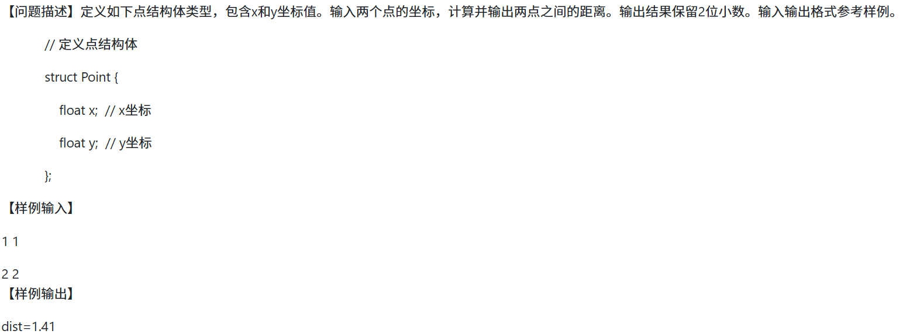

C_study_Note
注意
- 大写->小写:
x=X+32. - (int)/(int):
d=(float)n1/n2. - 判断的等于号是
== - 注意越界问题，涉及
i+1时应当将循环次数减一. - 记得看要求输出格式.
错题
-
已知学生记录的定义为：
1 | struct student |
假设变量s中的birth应是“2008年5月10日”，对birth的正确赋值语句是
(D) s.birth.year=1988; s.birth.month=5; s.birth.day=10;

原代码
1 | #include<math.h> |
改变
-
新建一个变量记录变化量。这个就没有必要用指针了吧。
1 | /* 指针p指向点的x,y坐标 */ |
1 | /* 主函数中 */ |
注意指针使用前的初始化
-
dx*dx以增加可读性和整洁性
1 | float dx,dy,dist; |
更改后
1 | #include<stdio.h> |
-
错误输出为0时可能的原因
a. 控制符类型写错
b. 没有加取地址符& -
利用结构体数组编写程序计算班级每名学生的体重指数，假设班级有n名学生，n从键盘输入，在程序中输入每名学生的学号、姓名、身高（m）、体重（kg），利用以下公式计算体重指数：BMI=体重（千克）÷身高（m）的平方
报错：栈错误原代码：
1 | float cal_BMI(float sg, float tz) |
-
未加取地址符。结构体
p->member后是一个普通变量，因此也要加取地址。**这个会导致堆栈错误。尤其是和下面一个组合起来。**但是，数组名本身就是地址，不用加取地址符。 -
指针未移动，导致几次输入改变同一个元素。
1 | for(i=0;i<num;i++,p++) |
常见代码段
-
最大公约数
1 | int find_gcd(int a, int b) |
-
冒泡排序
1 | void bubbleSort(int arr[], int n) |
-
交换函数
1 | void exc(int *a,int *b){ |
-
数组从某个地方开始向后移动
1 | int i,t; //t是需要需要往后移动的位置 |